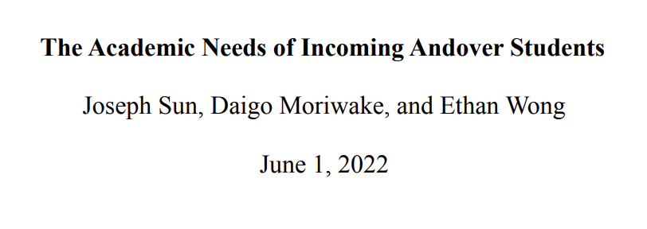

Ethan Wong's Statistics Projects
In the 2021-2022 school year, I conducted mutiple statistics projects in the Project Based Statistics Class.
First Project: Perceptions of Computer Science: Race and Gender
In this project, my group and I attempted to help the Phillips Academy computer science department remodel their circiculum to be more inclusive of different races and genders. To read the paper, please visit this link.
Second Project: Modeling SARS-CoV-2: Effects of COVID-19 on Age Over Time
In this project, my group and I attempted to model the effects of COVID-19 on difference age groups in different time frames. We fitted data to different age groups and utilized those data to create regressions. To read the paper, please visit this link.
Thrid Project: The Academic Needs of Incoming Andover Students
In this project, my group and I attempted to help the Phillips Academy Academic Skill Center identify groups of students that are in need of academic help and if the academic skill center is reachin them. To read the paper, please visit this link.
